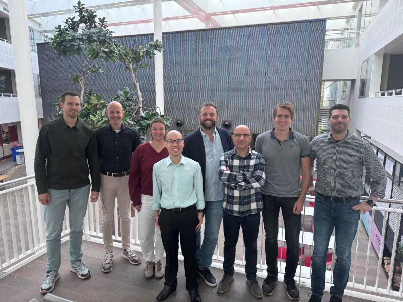
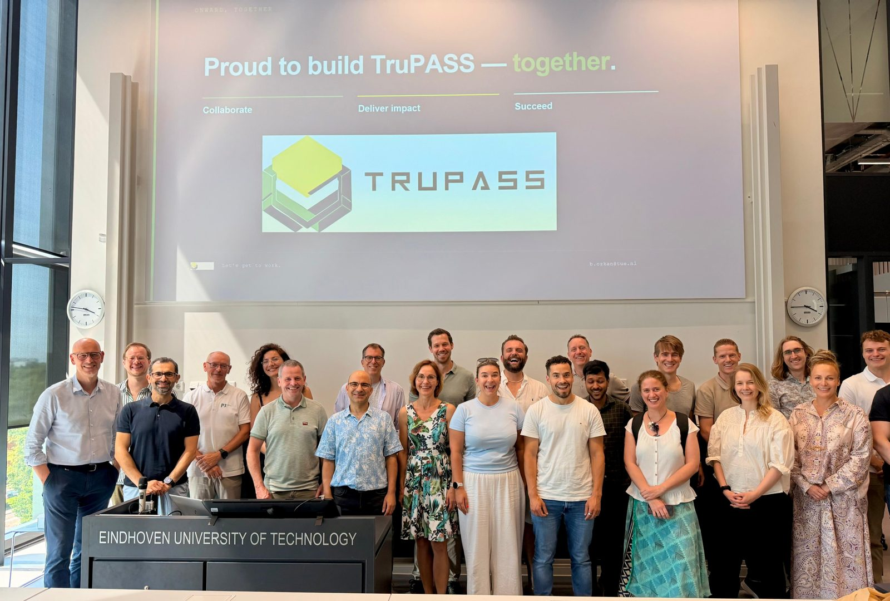

Announcements about TruPASS events, publications and opportunities.
Event
Work package leaders meet at the University of Twente
TruPASS research is moving forward. At the first meeting of all work package leaders, hosted by the University of Twente, our team advanced our shared research vision for trust in Digital Product Passport (DPP) ecosystems.
Our vision: across our 15-partner consortium, funded by NWO (Dutch Research Council), we aim to establish the trust conditions for successful DPPs and their management throughout their lifecycle, in ways that are socially and economically meaningful, digitally enabled, and methodologically sound.

The TruPASS work package leaders at the University of Twente, 12 October 2026.
Announcement
TruPASS kicks off at TU Eindhoven
The TruPASS consortium met at TU Eindhoven for its kick-off meeting. Partners from research and practice set out the challenge, the use cases in hydrogen and container logistics, and the plans for the years ahead.

The TruPASS consortium at the kick-off, TU Eindhoven, 25 June 2026.
Publication
A Trust Manifesto for data-sharing ecosystems
At the Trust in the Spotlight workshop, held before ECIS 2026 at Università Bocconi in Milan, TruPASS researchers and colleagues from nine universities affirmed six shared principles on the control–trust dynamics that make data sharing trustworthy, by design and in use.
First TruPASS academic event: Trust in the Spotlight
The Pre-ECIS 2026 workshop Trust in the Spotlight: Control–Trust Dynamics in the Design and Performance of Data-Sharing Ecosystems, convened by Simon Schafheitle (University of Twente) and Baris Ozkan (TU Eindhoven), brought researchers and practitioners together in Milan.